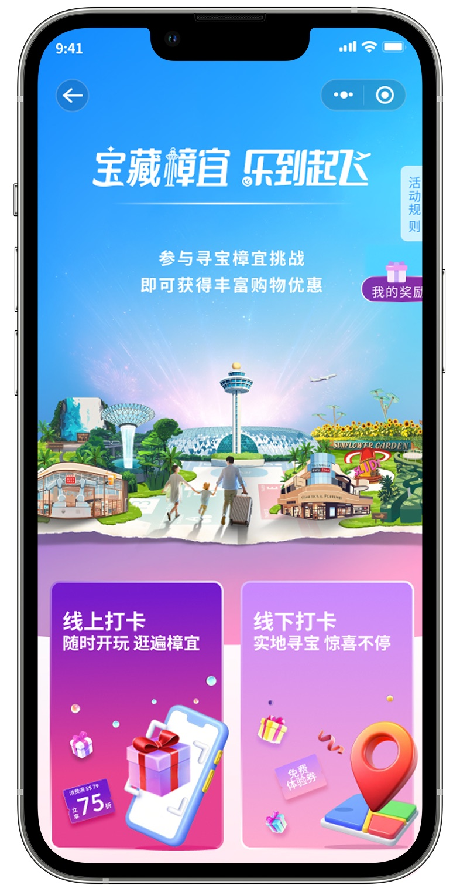
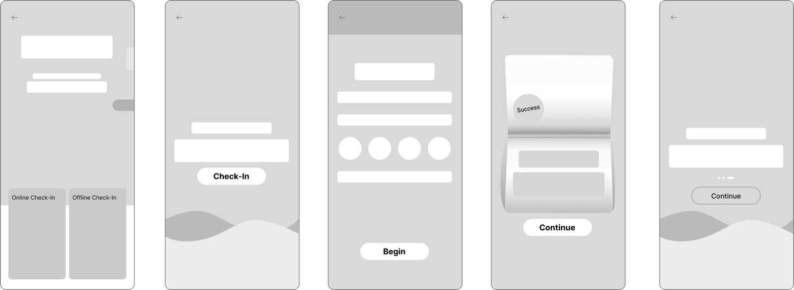
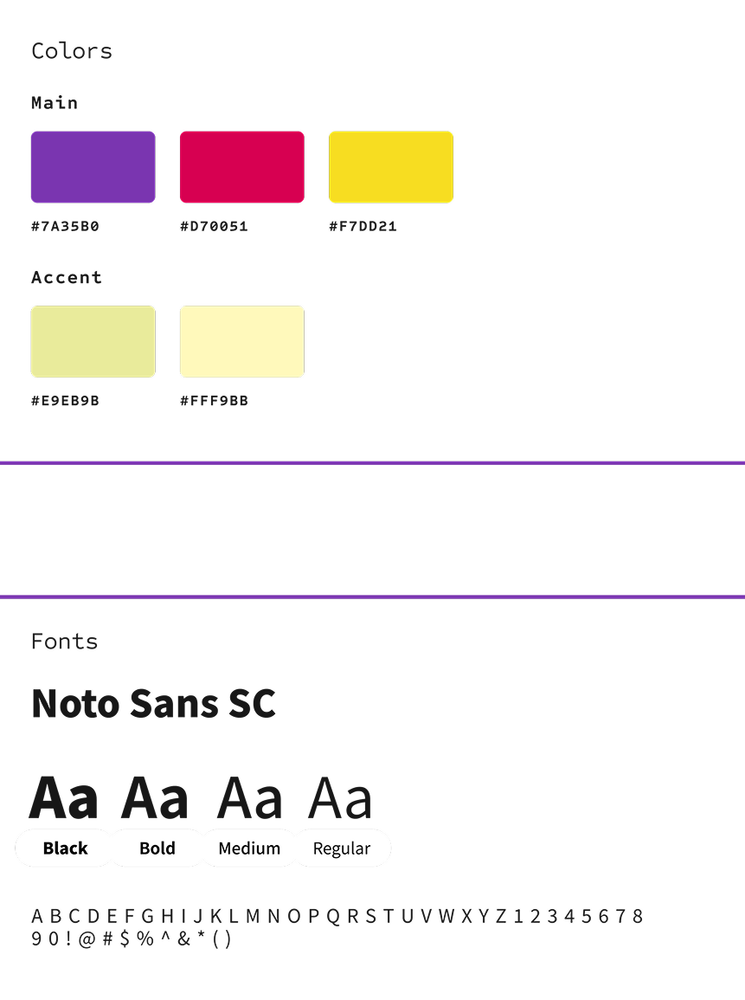
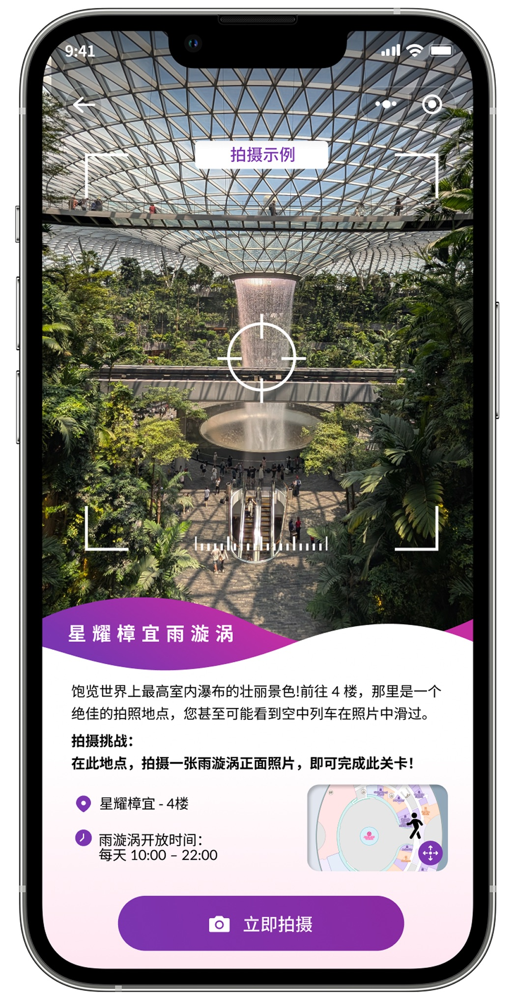
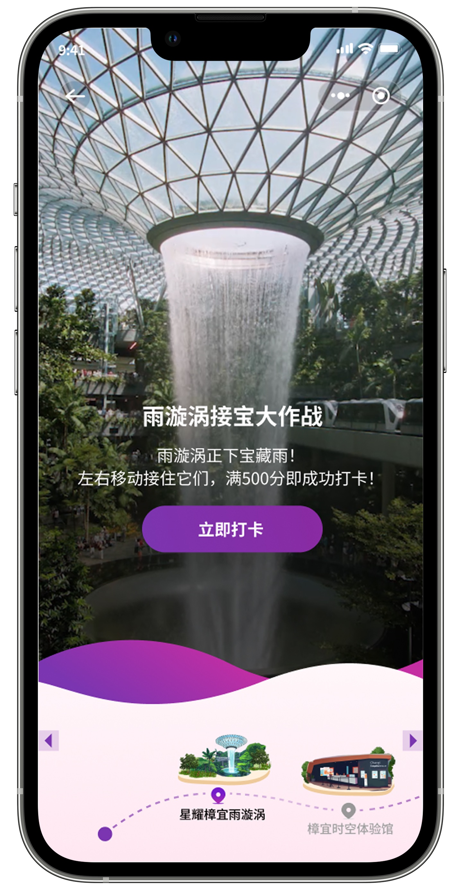
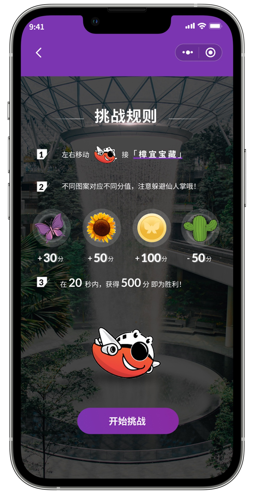
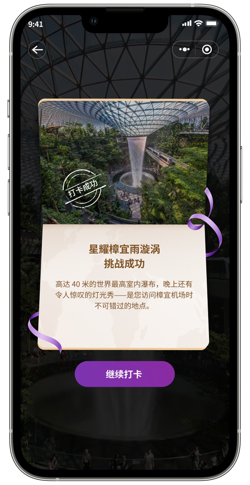
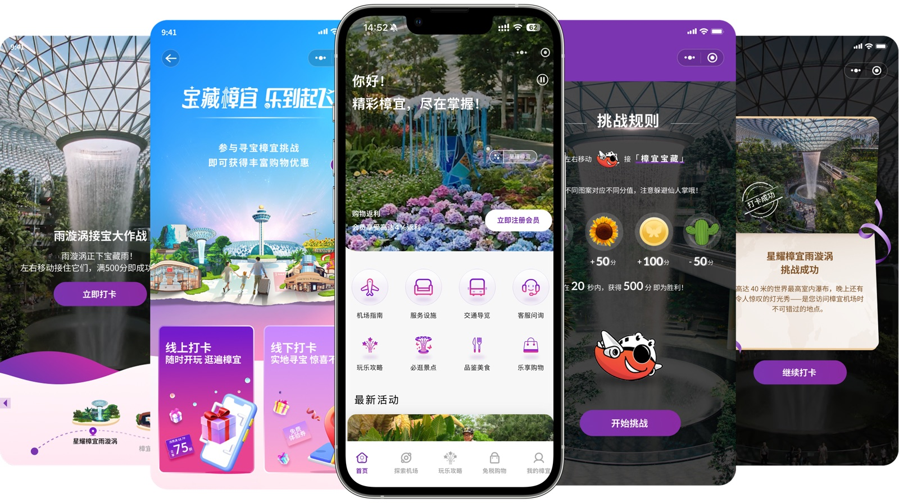
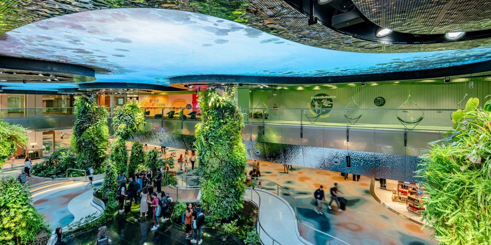
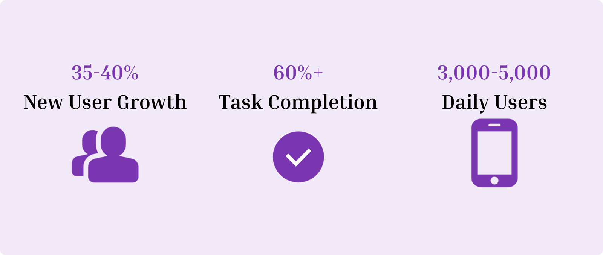

Homepage
- Homepage highlights the current main task of the summer campaign
- Displays task progress and reward status in sync on mobile
- Distinguishes between online and offline participation channels
A gamified WeChat mini-program designed to turn Changi Airport summer campaign into an interactive travel experience. The experience combines digital challenges, location-based exploration, photography tasks, quizzes, and rewards to encourage travellers to explore the airport while engaging with Changi retail and leisure offerings.
My role
UI/UX Designer
Changi Airport is more than a transit hub. It is also a destination with retail, entertainment, attractions.
For the summer campaign, the challenge was to transform these scattered activities into one coherent digital journey that could be accessed through WeChat.
The target audience was primarily Chinese travellers, who were familiar with WeChat as an everyday service and communication platform.
(1) Multiple Activities
Summer campaign content was distributed across different attractions, retail locations and airport experiences.
(2) Limited Attention
Travellers interact with digital content while navigating a busy airport environment.
(3) Physical+Digital
The experience needed to connect a digital interface with real-world locations.
(1) Fast To Understand
Airport users have limited time and attention. Information hierarchy needs to be immediately scannable.
(2) Easy To Participate
Campaign rules should require minimal explanation. Each activity follows a clear Discover Participate Complete Reward flow.
(3) Location-Aware
Many activities happen physically inside the airport. Digital interactions need to clearly communicate where and how users should participate.
(4) Reward-Driven
Rewards provide the motivation to complete multiple activities. A centralized reward system keeps users aware of their progress.
I picked one design layout and created variations to get feedback on different user flows. Then finalized the screen and here is the low fidelity screen.

The visual system defines the campaign's colour palette, typography and mascot. Bold purple branding and rounded, friendly shapes keep every screen recognisable and playful.









Pros and Cons
Designing for travelers meant considering their limited time, changing locations, and different levels of attention. The project taught me to think beyond individual screens and focus more on how users move through the entire experience.
Forwards
I would conduct more usability testing with real travelers and use behavioral data to understand where users struggle or drop off. This would help me further simplify the experience and make the connection between digital challenges, physical exploration, and rewards more seamless.
Singapore Changi Airport summer campaign Designing an interactive Experience for Chinese Travellers